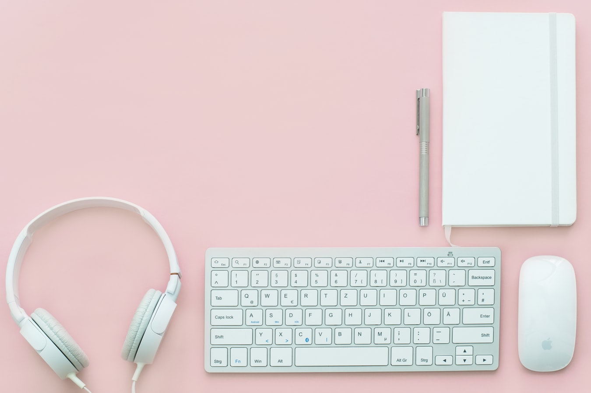
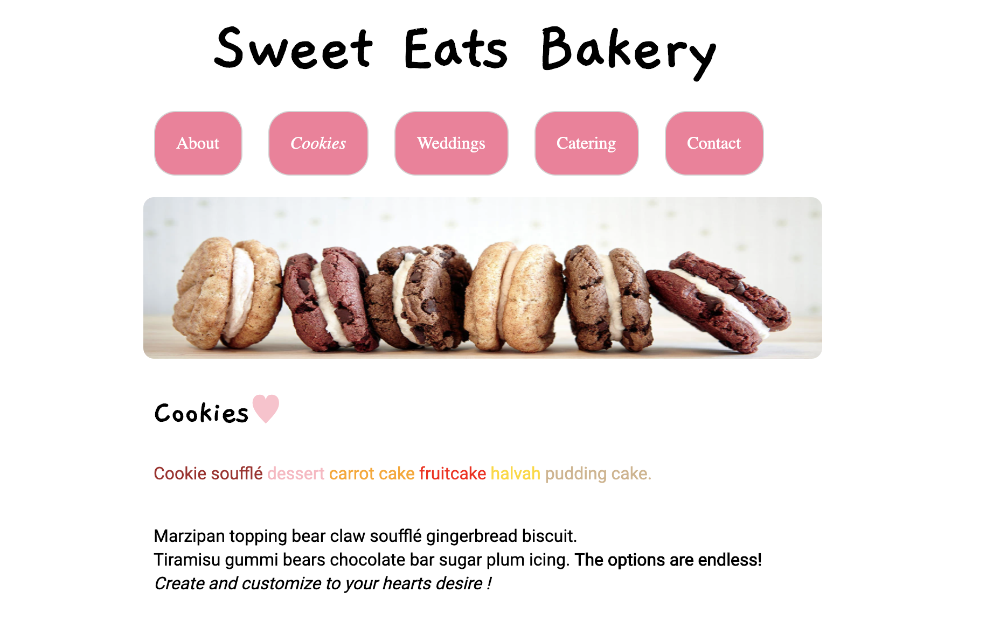

I am an experienced -----------. I have --- years of experience. I am skilled in the following: -----, -----, -----. I am extremely passionate about: ----, ------, ------. My latest project involved: -------. I truly enjoy learning and developing myself, and my projects. I would love to talk to you one on one.



These projects involved responsive design. Css and HTML. I am passionate
about color palettes and efficient code. I truly enjoy bringing a website to life.